Getting started
The game opens on the home screen. Pick where to go: build in the Workshop, play a Mission, explore in Free Flight, or look at your Photos.
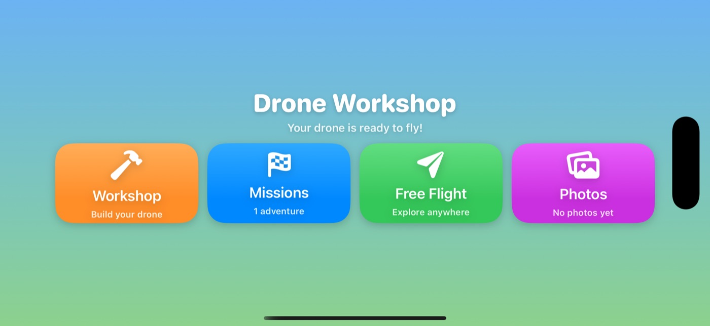
Building your drone
New players start with an empty drone frame on the workbench. Every part is a real 3D object with its own weight and job.
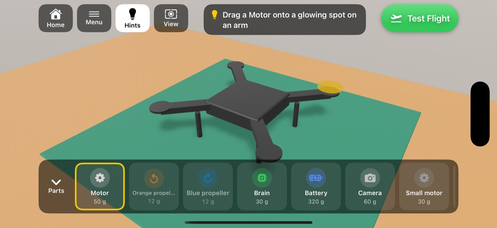
- Drag a part from the parts box onto a glowing spot on the drone. When the part is close enough, it snaps into place. You can also tap a part, then tap a glowing spot.
- Add four motors on the ends of the arms, the Brain (flight controller) in the middle, and the Battery on top.
- Add propellers on top of the motors. Match the colours: an orange propeller goes where the ring glows orange, a blue one where it glows blue. Propellers spin in opposite directions so the drone doesn't twist around.
- Attach the camera at the front. You need it to take photos.
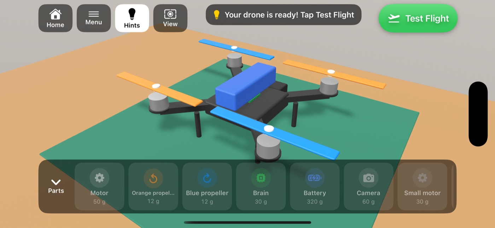
Changing parts
Tap any part on the drone to see its details, then Remove it or swap it for a different version (for example a heavier camera). You can also drag a part to a new spot. A motor carries its propeller with it. To put a part back, drag it onto the parts box.
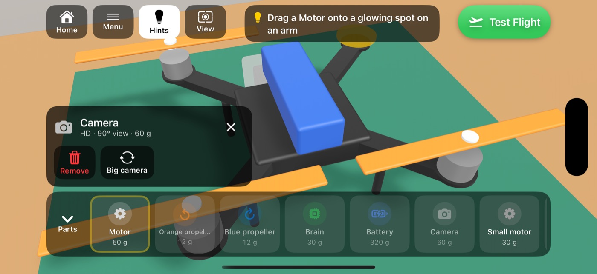
Moving around the workshop
- Turn the drone: drag one finger on empty space.
- Zoom: pinch with two fingers.
- Back to the normal view: tap View.
- Hide the hints: tap Hints. Experienced builders can build in any order.
Mission 1: Cliff Photographer
"A visitor is waiting on the cliff. Build your drone, fly over, take a clear picture, and return safely to base."
Choose Missions on the home screen. The briefing checks your drone before you go. If something is missing, such as the camera, it tells you and offers a trip to the workshop. You can still fly anyway and see what happens.
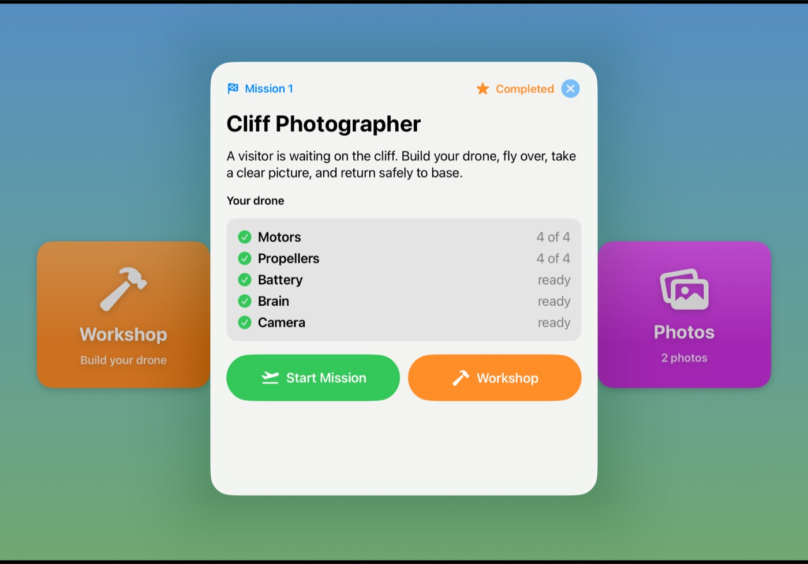
- Take off from the landing pad.
- Find the cliff. Follow the yellow arrow at the top of the screen and look for the bouncing yellow marker above the visitor.
- Take a picture. Tap Camera to look through your drone's camera, put the visitor in the middle, and tap the round shutter button.
- Head back home and land on the pad. A green light beam shows where it is.
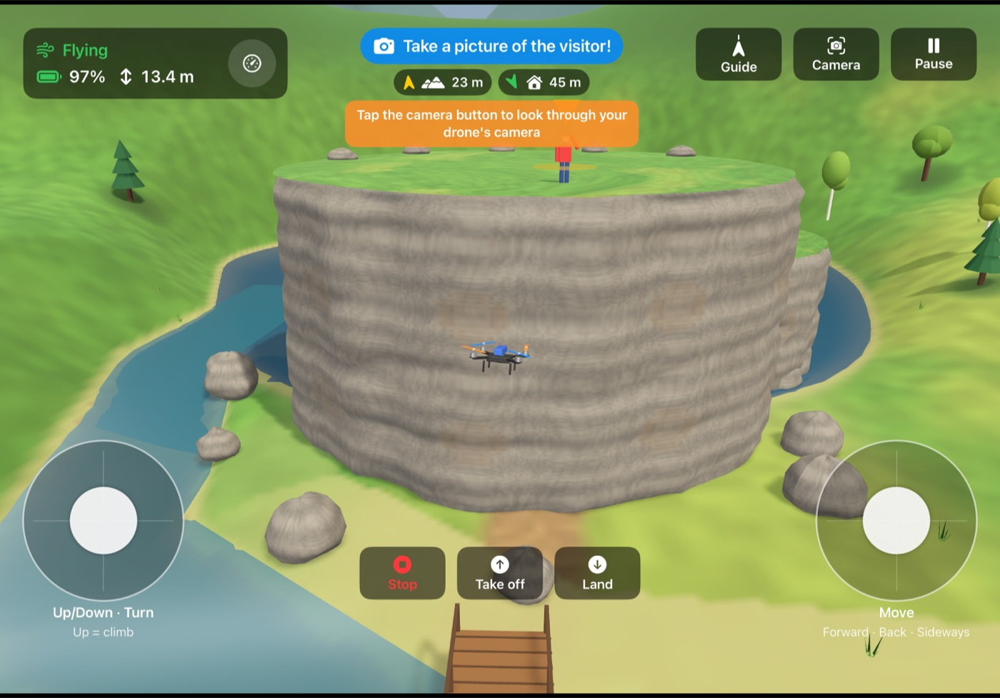
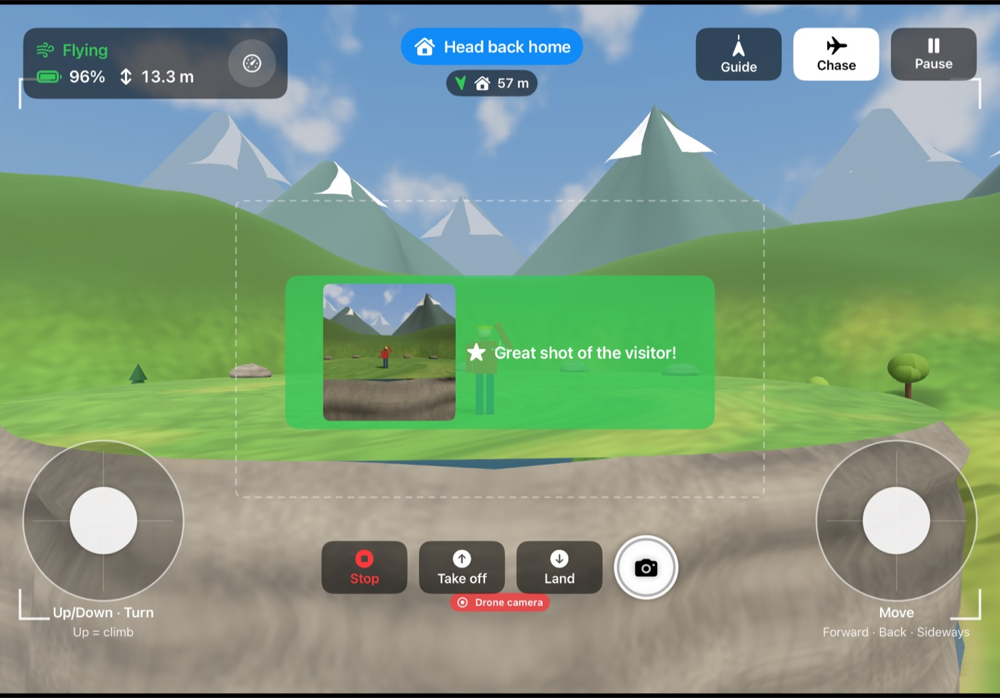
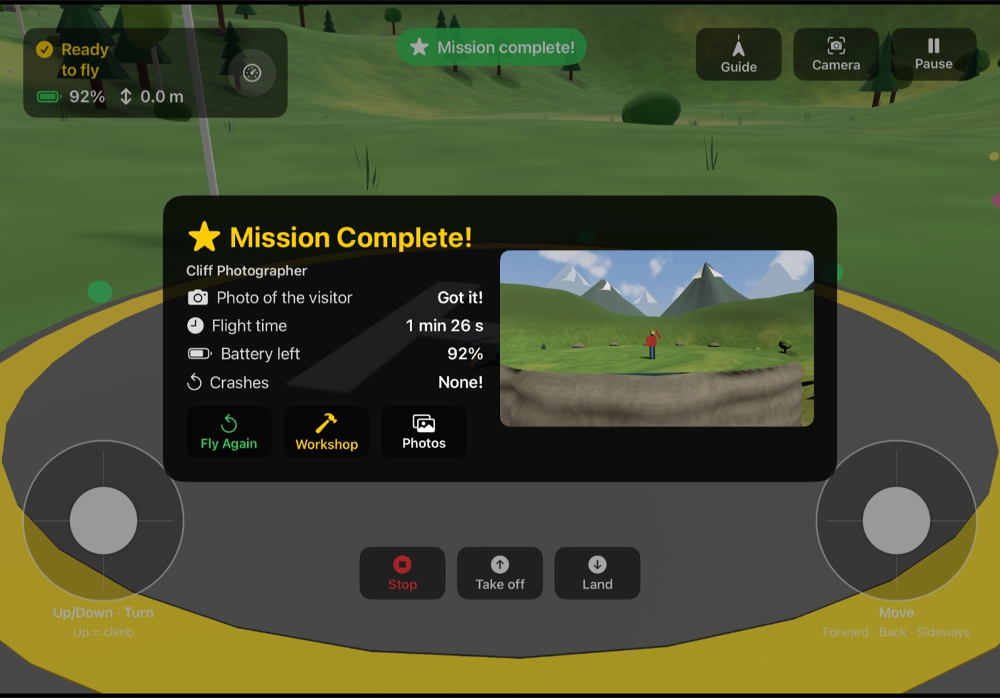
Flying
Every flight uses exactly the drone you built. Nothing is added or fixed automatically. In Free Flight you can go anywhere. Follow the river up to the waterfall, fly under or over the wooden bridge, visit the rocky overlook with its telescope, find the forest clearing, or circle the cliff and the lake. The cabin next to the landing pad is home.
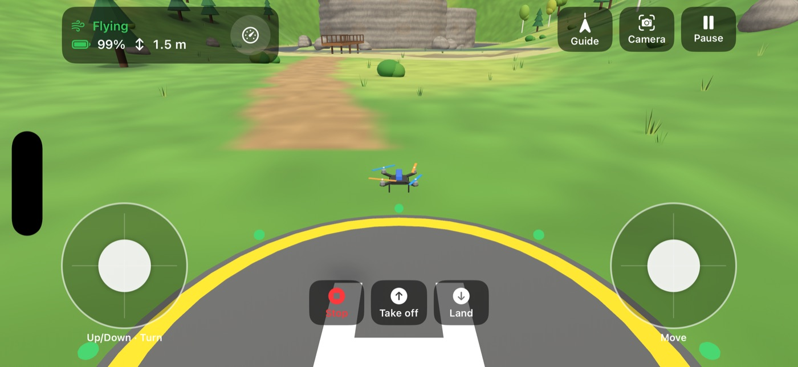
| Control | What it does |
|---|---|
| Start / Stop | Turns the motors on or off. |
| Take off / Land | In Assisted mode, climbs to 1.5 m and hovers, or comes down gently. |
| Left stick | Up and down: climb or descend. Left and right: turn. |
| Right stick | Fly forward, backward and sideways. |
| Camera / Chase | Switches between looking through the drone's camera and following behind the drone. |
| Shutter | The round button in camera view takes a photo. |
| Guide | In Assisted mode, shows a big arrow pointing to where you need to go. |
| Pause | Resume, Restart, switch Assisted/Manual, go to the Workshop, or go Home. |
Assisted mode is best for beginners: the drone keeps itself level, holds its height and stops when you let go. Manual mode lets the left stick set motor power directly. It's harder, and more like a real pilot. The game remembers your choice.
Engineering Details
Tap the gauge button on the status card for the numbers behind the flight: speed, tilt, battery voltage and current, weight, thrust and where the balance point is. The four bars show how hard each motor is pushing; the white line marks what each motor needs to hover.
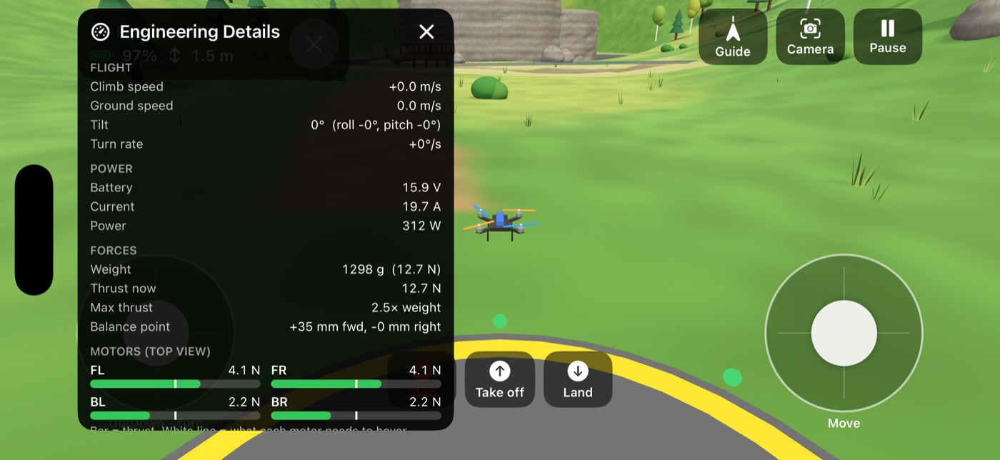
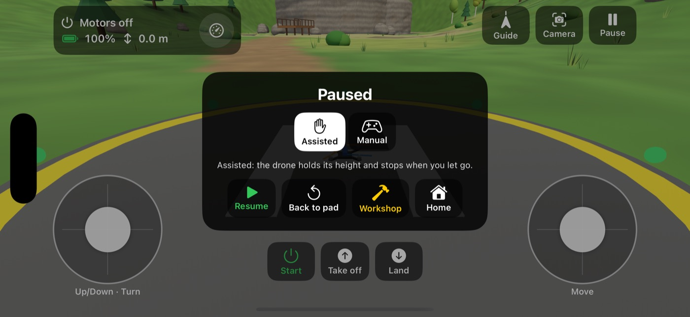
Photos
Photos are saved on your device. Open them from Photos on the home screen or from the mission results. Tap a photo to see it full screen; swipe to see the others. A star marks a mission photo of the visitor.
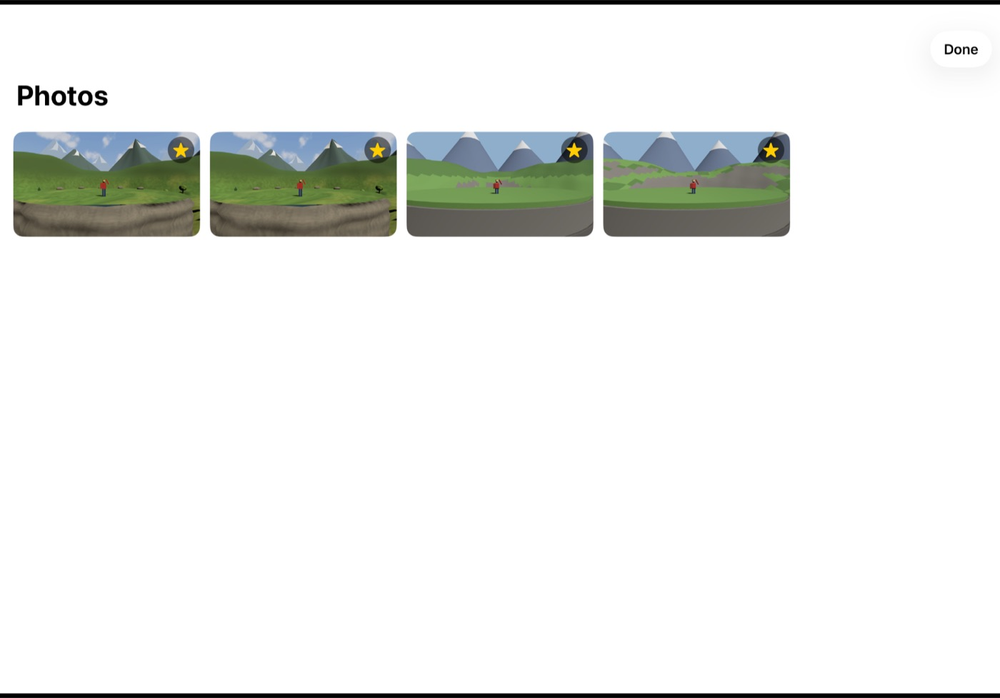
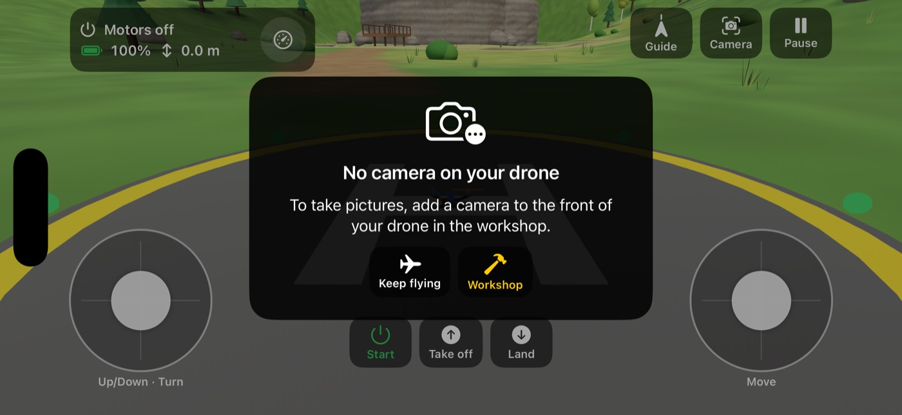
Experiments to try
The drone flies according to real physics, worked out from the parts you installed. Nothing is scripted, so "mistakes" are the best way to learn.
| Try this | What happens | Why |
|---|---|---|
| Leave out one motor | The drone tips over as it tries to lift off. | One corner has no thrust, and nothing balances the turning push of the other propellers. |
| No battery | Nothing happens. | Motors need electricity to spin. |
| Fit the big camera | It still flies, but the battery drains much faster. Its zoom lets you take the mission photo from further away. | Extra weight up front: the front motors must work harder. |
| Put a propeller on the wrong colour | The drone can't fly steadily. | That propeller blows air up instead of down. |
| Use small motors | The drone can't take off. | The motors can't push harder than the drone's weight. |
| Fly until the battery runs out | The drone loses power and comes down. | No charge left means no thrust. |
| Land in the lake, the river or the waterfall | Splash! The drone stops working. | Water and electronics don't mix. |
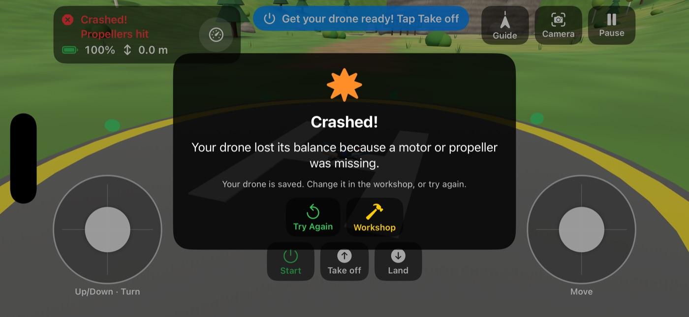
On iPad
On iPad the parts box sits down the side and shows more about each part, the 3D view is bigger, and the joysticks are larger and placed where thumbs rest. The mission screenshots above were taken on iPad.
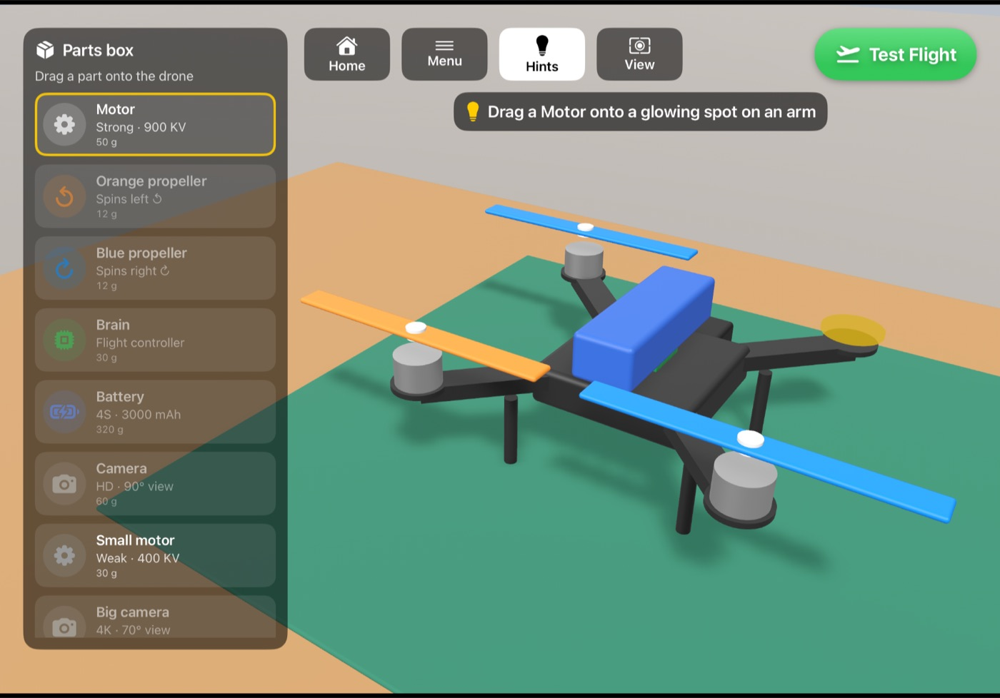
Common questions
Which devices does Drone Workshop run on?
iPhone with iOS 26.5 or later and iPad with iPadOS 26.5 or later. The game plays in landscape, so turn the device sideways.
My drone flips over or won't take off. Is the game broken?
Usually the drone is telling you something about how it was built. Check that all four motors and propellers are fitted, that each propeller matches the colour of its ring, and that the battery and Brain are installed. Open Engineering Details during a flight to see which motor is missing or struggling.
My photo didn't count for the mission. Why?
The message after each photo says what to fix: fly closer, put the visitor in the middle, or move so nothing is in the way. Keep the visitor inside the dashed box in camera view, about 5–10 m away.
I'm lost. How do I get back?
The green arrow at the top of the screen always points home and shows how far away it is. In Assisted mode, tap Guide for a big arrow. Near home, a green light beam marks the landing pad.
The drone crashed. How do I try again?
Tap Try Again to start from the landing pad. In a mission, a good photo you already took is kept. Or tap Workshop to change your drone first.
Will I lose my drone, photos or progress if I close the app?
No. Your drone, your photos and completed missions are saved on the device automatically. A flight that's in progress isn't saved, so the next time you open the game you start from the home screen.
How do I start again with an empty frame?
In the workshop, tap Menu → Start over and confirm.
Can I turn off the hints?
Yes. Tap Hints in the workshop. You can turn them back on at any time.
Is this a realistic drone simulator?
It uses real physics (gravity, thrust from each propeller, weight, balance and battery power) with simplified values for a typical camera drone. It's designed for learning how drones work, not for training professional pilots.
Privacy
Drone Workshop works completely offline. It has no accounts, no ads, no in-app purchases and no tracking. It doesn't collect or send any personal information. Your drone, photos and progress are saved only on your own device.
Contact
Found a problem or have an idea? Please open an issue on GitHub. Say which device you're using and what happened, and a screenshot helps a lot.